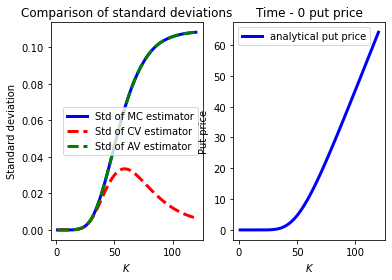

import numpy as np
import matplotlib.pyplot as plt
from scipy.stats import norm
rng = np.random.default_rng(2468)Solutions to Assignment 11
ME200, Johannes Ruf and Luitgard Veraart
Exercise 42: (Black-Scholes option pricing formula - European put option)
Let \(X \sim \textrm{N}(0, 1)\). Then,
\[\begin{align*} \textrm{E}\left[ e^{-rT} (K-S_T)^+ \right] &= \textrm{E}\left[ e^{-rT}(K-S_0 \exp \left( (r - \frac{\sigma^2}{2})T + \sigma \sqrt{T} X \right))^+\right]\\ &= \int_{-\infty}^{+\infty} e^{-rT} (K - S_0 \exp\left( (r - \frac{\sigma^2}{2})T + \sigma \sqrt{T} x\right))^+ \frac{1}{\sqrt{2 \pi}} \exp\left(-\frac{x^2}{2}\right) dx=(*). \end{align*}\] Now observe that \[\begin{align*} K \geq S_0 \exp\left( (r - \frac{\sigma^2}{2})T + \sigma \sqrt{T} x\right) \Longleftrightarrow x \leq - \frac{\log \left(\frac{S_0}{K} \right) + \left(r - \frac{\sigma^2}{2}\right)T}{\sigma \sqrt{T}}=-(D_1 - \sigma \sqrt{T})=-D_1 + \sigma \sqrt{T}. \end{align*}\] Hence, \[\begin{align*} (*)&= \int_{-\infty}^{-D_1+ \sigma \sqrt{T}} e^{-rT} (K-S_0 \exp\left( (r - \frac{\sigma^2}{2})T + \sigma \sqrt{T} x\right)) \frac{1}{\sqrt{2 \pi}} \exp\left(-\frac{x^2}{2}\right) dx\\ &= e^{-rT} K \int_{-\infty}^{-D_1+ \sigma \sqrt{T}} \frac{1}{\sqrt{2 \pi}} \exp\left(-\frac{x^2}{2}\right) dx - e^{-rT} S_0 \int_{-\infty}^{-D_1+ \sigma \sqrt{T}} \exp\left( (r - \frac{\sigma^2}{2})T + \sigma \sqrt{T} x\right) \frac{1}{\sqrt{2 \pi}} \exp\left(-\frac{x^2}{2}\right) dx. \end{align*}\]
We now look at the two integrals separately. We start with the first one: \[\begin{align*} \int_{-\infty}^{-D_1+ \sigma \sqrt{T}} \frac{1}{\sqrt{2 \pi}} \exp\left(-\frac{x^2}{2}\right) dx =\Phi(-D_1 + \sigma \sqrt{T}). \end{align*}\]
Next we evaluate the second integral:
\[\begin{align*}
&\int_{-\infty}^{-D_1+ \sigma \sqrt{T}} \exp\left( (r - \frac{\sigma^2}{2})T + \sigma \sqrt{T} x\right) \frac{1}{\sqrt{2 \pi}} \exp\left(-\frac{x^2}{2}\right) dx\\
&= \exp\left( (r - \frac{\sigma^2}{2})T \right)
\int_{-\infty}^{-D_1+ \sigma \sqrt{T}} \frac{1}{\sqrt{2 \pi}} \exp\left( -\frac{1}{2} \left( x^2 -2\sigma \sqrt{T} x + \sigma^2 T - \sigma^2 T \right) \right) dx\\
&=\exp\left( (r - \frac{\sigma^2}{2})T + \frac{\sigma^2T}{2}\right)
\int_{-\infty}^{-D_1+ \sigma \sqrt{T}} \frac{1}{\sqrt{2 \pi}} \exp\left( -\frac{1}{2} \left( x -\sigma \sqrt{T}) \right)^2 \right)dx\\
&=e^{rT} \Phi(-D_1+\sigma \sqrt{T}-\sigma \sqrt{T})\\
&=e^{rT} \Phi(-D_1).
\end{align*}\]
Combining these results, gives \[\begin{align*} \textrm{E}\left[ e^{-rT} (K-S_T)^+ \right] = K e^{-rT} \Phi(-D_1 +\sigma \sqrt{T}) - S_0 \Phi(-D_1). \end{align*}\]
Exercise 43: (Variance reduction techniques for option pricing)
- A Monte Carlo estimator for the European put option with maturity \(T\) and strike \(K\) is given by
\[\begin{align*} V^{\textrm{MC}}_0(n) = \frac{1}{n} \sum_{i=1}^n e^{-rT} \left(K - S_0 \exp\left( (r - \frac{\sigma^2}{2}) T + \sigma \sqrt{T} X_i \right) \right)^+, \end{align*}\] where \(X_1, \ldots, X_n\) are i.i.d. from the \(\mathcal{N}(0, 1)\) distribution.
Since for \(X \sim \mathcal{N}(0, 1)\), \((X, -X)\) is an antithetic pair, an antithetic variates estimator for the time-0 price of a European put option is given by \[\begin{align*} V^{\textrm{MC}}_0(n) &= \frac{1}{2n} \sum_{i=1}^n e^{-rT} \left(K - S_0 \exp\left( (r - \frac{\sigma^2}{2}) T + \sigma \sqrt{T} X_i \right) \right)^+\\ & \quad +\frac{1}{2n} \sum_{i=1}^n e^{-rT} \left(K - S_0 \exp\left( (r - \frac{\sigma^2}{2}) T + \sigma \sqrt{T} (-X_i) \right) \right)^+ , \end{align*}\] where \(X_1, \ldots, X_n\) are i.i.d. from the \(\mathcal{N}(0, 1)\) distribution.
Let \(X_i\) be i.i.d. random variables from the standard normal distribution and let \(S_i(T)=S_0 \exp\left( (r - \frac{\sigma^2}{2}) T + \sigma \sqrt{T} X_i \right)\) and \(Y_i = e^{-rT} (K - S_i)^+\). Then a control variate estimator for the time-0 price of a European put option is given by \[\begin{align*} \overline{Y}_n(b) = \frac{1}{n} \sum_{i=1}^n (Y_i - b(e^{-r T}S_i(T) - S(0))), \end{align*}\] where \(b\) would often be chosen to be \(\hat{b}_n^*\) as defined in the lecture notes.
We will implement the different estimators in Python next.
Analytical formula and standard Monte Carlo estimator for the European put price
First, we implement the analytical formula for the time-\(0\) price of the European put in the Black-Scholes model and a classical Monte Carlo estimator.
def black_scholes_put(S0, K, r, T, sigma):
d1 = (np.log(S0 / K) + (r + 0.5 * sigma**2) * T)/(sigma * np.sqrt(T))
d2 = d1 - sigma * np.sqrt(T)
tmp1 = S0 * norm.cdf(-d1, loc=0, scale=1)
tmp2 = K * np.exp(-r * T) * norm.cdf(-d2, loc=0, scale=1)
price = tmp2 - tmp1
return price
def terminal_stockprice(rng, S0, T, r, sigma, samplesize):
mystandardnormalsample = rng.standard_normal(size=samplesize)
tmp1 = (r - 0.5*(sigma ** 2)) * T
tmp2 = sigma * np.sqrt(T) * mystandardnormalsample
stockprice = S0 * np.exp(tmp1 + tmp2)
return stockprice
def bs_put_mc(rng, S0, K, T, r, sigma, samplesize, myepsilon):
# Generate terminal stock prices.
mystockprice = terminal_stockprice(rng, S0, T, r, sigma, samplesize)
# Compute payoffs.
payoffs = np.maximum(K - mystockprice, 0)
# Discount payoffs
discountedpayoffs = np.exp(- r * T)*payoffs
# Compute MC price
price = np.mean(discountedpayoffs)
# Compute confidence interval next
standarddev_rv = np.std(discountedpayoffs, ddof=1)
standarddev_mcest = standarddev_rv / np.sqrt(samplesize)
aepsilon = norm.ppf(1.0 - myepsilon * 0.5)
# Left boundary of CI
ci_left = price - aepsilon * standarddev_mcest
# Right boundary of CI
ci_right = price + aepsilon * standarddev_mcest
return price, standarddev_mcest, ci_left, ci_right# Defining some model parameters
S0 = 50.0
K = 50.0
T = 0.25
r = 0.05
sigma = 0.3
halfsamplesize = 100000
samplesize = 2 * halfsamplesize
myepsilon = 0.05print('----------------')
print('The analytical option price of the put is {:.4f}'.format(black_scholes_put(S0, K, r, T, sigma)))
print('-----------------')
MCresults = bs_put_mc(rng, S0, K, T, r, sigma, samplesize, myepsilon)
print('MC put price: {:.4f} and stdev of MC est: {:.4f}'.format(MCresults[0],MCresults[1]))
print('CI based on MC is ("{:.4f}, {:.4f})'.format(MCresults[2], MCresults[3]))----------------
The analytical option price of the put is 2.6704
-----------------
MC put price: 2.6776 and stdev of MC est: 0.0085
CI based on MC is ("2.6610, 2.6943)Antithetic variates estimator for the European put price
Second, we implement an antithetic variates estimator for the time-\(0\) price of the European put.
def terminal_stockprice_av(rng, S0, T, r, sigma, halfsamplesize):
"""Function computes terminal stock prices based on antithetic pairs. """
mynormals1 = rng.standard_normal(halfsamplesize)
mynormals2 = - mynormals1
tmp1 = (r - 0.5*sigma ** 2) * T
tmp2 = sigma * np.sqrt(T) * mynormals1
tmp3 = sigma * np.sqrt(T) * mynormals2
stockprice1 = S0 * np.exp(tmp1 + tmp2)
stockprice2 = S0 * np.exp(tmp1 + tmp3)
allstockprices = np.concatenate((stockprice1, stockprice2))
return stockprice1, stockprice2, allstockprices
def bs_put_av(rng, S0, K, T, r, sigma, halfsamplesize, myepsilon):
""" Antithethic variate estimation for European call price in BS model."""
# Note that 2*halfsamplesize random variables will be used in the AV estimator.
# Generate terminal stock prices.
mystockprices = terminal_stockprice_av(rng, S0, T, r, sigma, halfsamplesize)
# Compute payoffs.
payoffs1 = np.maximum(K - mystockprices[0], 0)
payoffs2 = np.maximum(K - mystockprices[1], 0)
# Discount payoffs
discpayoffs1 = np.exp(- r * T)*payoffs1
discpayoffs2 = np.exp(- r * T)*payoffs2
thecov = np.cov(discpayoffs1, discpayoffs2, ddof=1)[0, 1]
possiblereduction = thecov / (2 * halfsamplesize)
discpayoffs = np.concatenate((discpayoffs1, discpayoffs2))
price = np.mean(discpayoffs)
standarddev_rv = np.std(discpayoffs, ddof=1)
standarddev_avest = standarddev_rv / np.sqrt(2 * halfsamplesize)
aepsilon = norm.ppf(1.0 - myepsilon * 0.5)
ci_left = price - aepsilon * standarddev_avest
ci_right = price + aepsilon * standarddev_avest
return price, standarddev_avest, ci_left, ci_right, possiblereduction
print('----------------')
AVresults = bs_put_av(rng, S0, K, T, r, sigma, halfsamplesize, myepsilon)
print('AV price: {:.4f} and stdev of AV est: {:.4f}'.format(AVresults[0], AVresults[1]))
print('CI based on AV is ({:.4f}, {:.4f})'.format(AVresults[2], AVresults[3]))
print('Note that sample covariance/(2n) is {:.8f}'.format(AVresults[4]))----------------
AV price: 2.6594 and stdev of AV est: 0.0085
CI based on AV is (2.6428, 2.6760)
Note that sample covariance/(2n) is -0.00003536Control variates estimator for the European put price
Third, we implement a control variate estimator for the time-\(0\) price of the European put in the Black-Scholes model.
def bs_put_cv(rng, S0, K, T, r, sigma, samplesize, myepsilon):
""" Control variate estimation for European put price in BS model."""
# Generate terminal stock prices.
mystockprice = terminal_stockprice(rng, S0, T, r, sigma, samplesize)
# Compute payoffs.
payoffs = np.maximum(K - mystockprice, 0)
# Discount payoffs
discountedpayoffs = np.exp(- r * T)*payoffs
# Use discounted stock as control
xs = np.exp(- r * T) * mystockprice
# Compute sample version of b*
bstar = np.cov(xs, discountedpayoffs, ddof=1)[0, 1] / np.var(xs, ddof=1)
# print("In cv bstar=", bstar)
# Define z= Y(bstar)
z = discountedpayoffs - bstar * (xs - S0)
# Compute MC price
price = np.mean(z)
# Compute confidence interval next
standarddev_rv = np.std(z, ddof=1)
standarddev_cvest = standarddev_rv / np.sqrt(samplesize)
aepsilon = norm.ppf(1.0 - myepsilon * 0.5)
# Left boundary of CI
ci_left = price - aepsilon * standarddev_cvest
# Right boundary of CI
ci_right = price + aepsilon * standarddev_cvest
# Compute the sqared correation rhosquared
tmpcov = np.cov(xs, discountedpayoffs, ddof=1)[0, 1]
tmpvarx = np.var(xs, ddof=1)
tmpvary = np.var(discountedpayoffs, ddof=1)
rhosquared = (tmpcov ** 2) / (tmpvarx * tmpvary)
return price, standarddev_cvest, ci_left, ci_right, rhosquared
print('----------------')
CVresults = bs_put_cv(rng, S0, K, T, r, sigma, samplesize, myepsilon)
print('CV price: {:.4f} and stdev of CV est: {:.4f}'.format(CVresults[0], CVresults[1]))
print('CI based on CV is ("{:.4f}, {:.4f})'.format(CVresults[2], CVresults[3]))
print('Note that rhosquared is {:.4f}'.format(CVresults[4]))----------------
CV price: 2.6669 and stdev of CV est: 0.0050
CI based on CV is ("2.6572, 2.6766)
Note that rhosquared is 0.6570Sensitivity of the variances of the estimators of the time-0 put option price with respect to the strike price
# Next we compare the standarddeviation of the MC, AV and the CV estimator
# Defining some model parameters
S0 = 50.0
sigma = 0.3
T = 1.0
r = 0.05
sigma = 0.3
halfsamplesize = 10000
samplesize = 2 * halfsamplesize
myepsilon = 0.05
numberofK = 100
Ks = np.linspace(start=1, stop=120, num=numberofK)
stdMC = np.zeros(numberofK)
stdCV = np.zeros(numberofK)
stdAV = np.zeros(numberofK)
analyticalprice = np.zeros(numberofK)
# Generate the terminal stock prices
mystockprice = terminal_stockprice(rng, S0, T, r, sigma, samplesize)
myavstockprices = terminal_stockprice_av(rng, S0, T, r, sigma, halfsamplesize)
myavstockprice = myavstockprices[2]
for i in range(numberofK):
K = Ks[i]
# Compute discounted payoffs
discountedpayoffs = np.exp(- r * T) * np.maximum(K-mystockprice, 0)
# Compute standard dev of MC estimator
stdMC[i] = np.std(discountedpayoffs, ddof=1) / np.sqrt(samplesize)
# Use discounted stock as control
xs = np.exp(- r * T) * mystockprice
# Compute sample version of b*
bstar = np.cov(xs, discountedpayoffs, ddof=1)[0, 1] / np.var(xs, ddof=1)
# Define z= Y(bstar)
z = discountedpayoffs - bstar * (xs - S0)
# Compute standard dev of CV estimator
stdCV[i] = np.std(z, ddof=1) / np.sqrt(samplesize)
#AV:
mystockprice = myavstockprice
discountedpayoffs = np.exp(- r * T) * np.maximum(K-mystockprice, 0)
# Compute standard dev of AV estimator
stdAV[i] = np.std(discountedpayoffs, ddof=1) / np.sqrt(samplesize)
# Compute the analytical put price for different strikes as well
analyticalprice[i] = black_scholes_put(S0, K, r, T, sigma)
fig, (ax1, ax2) = plt.subplots(nrows=1, ncols=2)
ax1.plot(Ks, stdMC, lw=3, c="blue", label="Std of MC estimator")
ax1.plot(Ks, stdCV, lw=3, c="red", label="Std of CV estimator", linestyle = "dashed")
ax1.plot(Ks, stdAV, lw=3, c="green", label="Std of AV estimator", linestyle = "dashed")
ax1.set_ylabel("Standard deviation")
ax1.set_xlabel(r"$K$")
ax1.set_title("Comparison of standard deviations")
ax1.legend(loc = "best")
ax2.plot(Ks, analyticalprice, lw=3, c="blue", label="analytical put price")
ax2.set_ylabel("Put price")
ax2.set_xlabel(r"$K$")
ax2.set_title("Time - 0 put price")
ax2.legend(loc = "best")
plt.show()